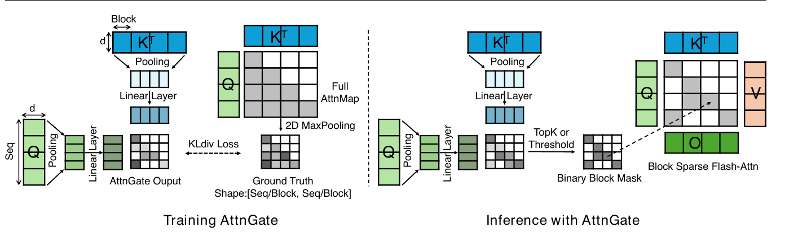
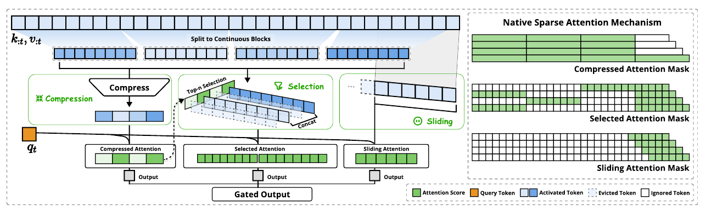
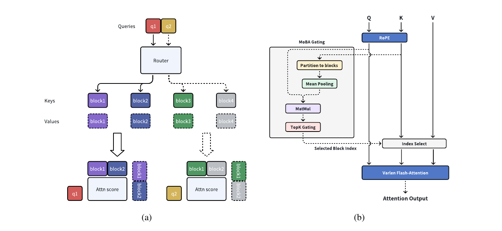
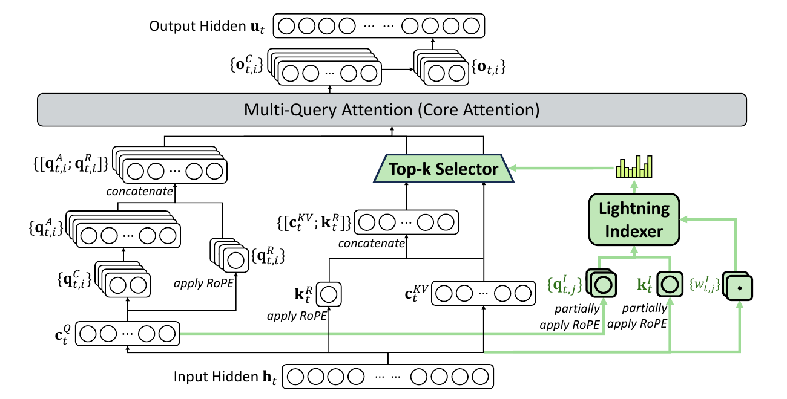
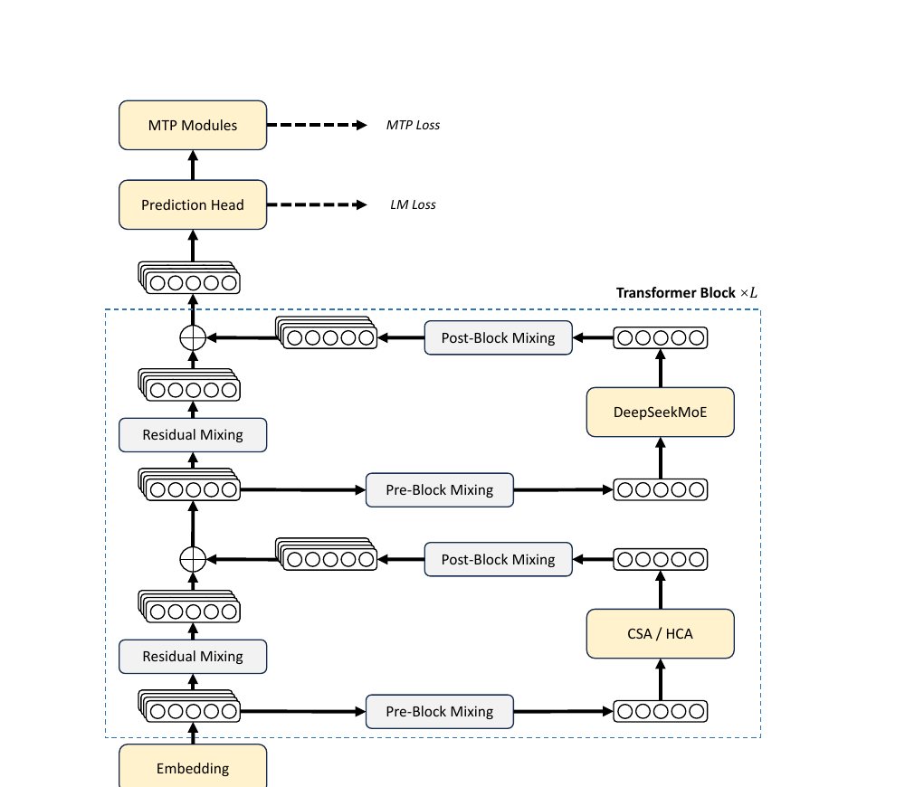
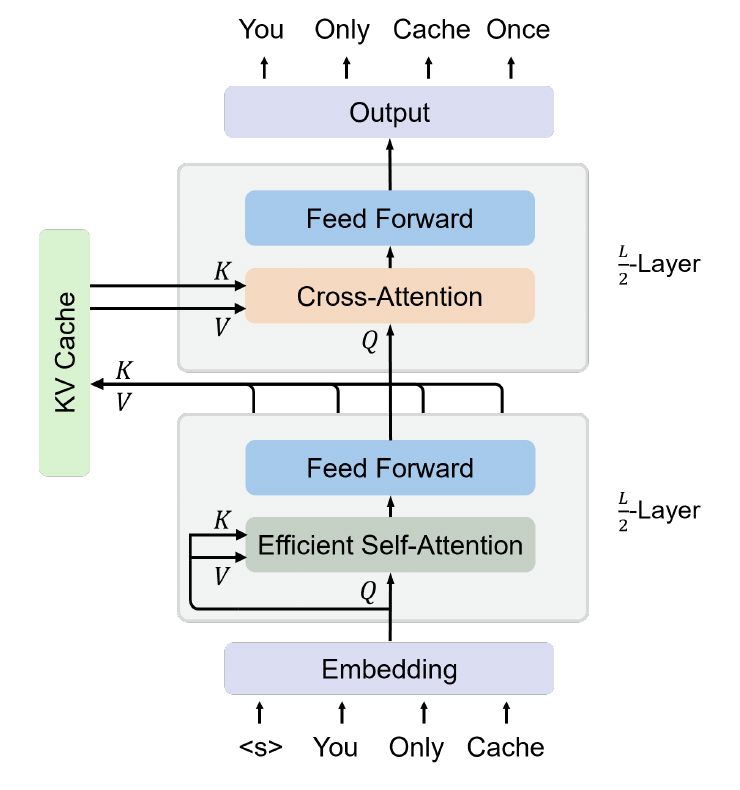
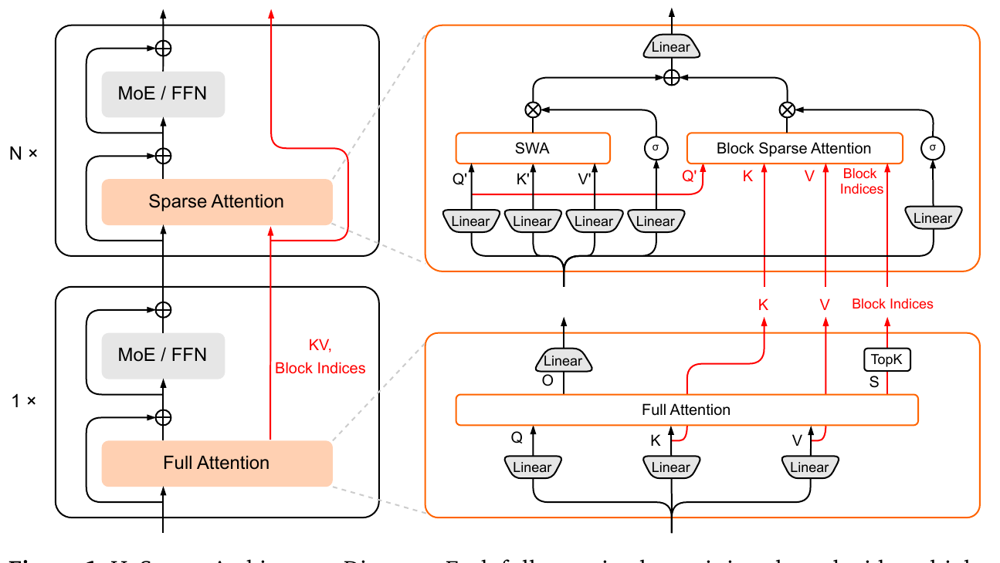
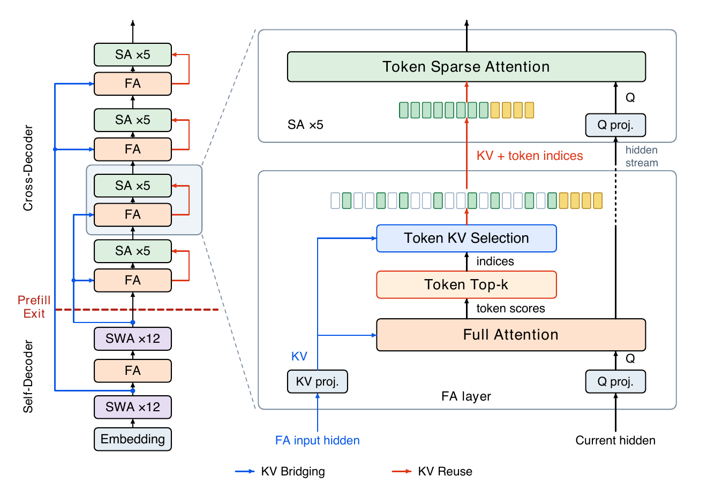

LLM 稀疏注意力架构调研：压缩、选择与 KV 共享三条主线
1. 概述与范围
长上下文 LLM 推理的成本拆成两个独立的轴：注意力计算量（每个 query 要和多少 KV 做内积，决定 prefill FLOPs 与 decode 访存）和 KV cache 存储（决定显存占用与跨节点传输量）。agentic 工作负载把两个轴同时推到极限——多轮 agent 每轮生成几十 token 的动作，却回灌几千 token 的工具观测，推理变成输入主导（input-dominated）：prefill 占大头、历史跨多轮累积、还要求跨轮精确取证。本调研以小米 LLM-Core 的 HySparse2（arxiv 2609.26368，2026-09）为锚点，梳理 LLM 侧稀疏注意力架构的演化谱系。
范围上只覆盖 softmax 注意力内部做稀疏化/压缩的工作；线性注意力混合（Kimi Linear 的 KDA:MLA=3:1、Qwen3-Next 的 Gated DeltaNet、MiniMax-01）是并行的另一条赛道，只在 §4/§6 作对照。视频扩散侧的稀疏注意力（块稀疏+低秩补偿家族）已有独立调研 compensated-sparse-attention-2026，两域对照见 §6。
三条主线（分类脊柱）
- 主线 A：可训练原生稀疏——把「选哪些 token」做成模型的一部分，预训练/后训练期学会。
SeerAttention（2410，后训练自蒸馏块门控）→NSA（2502，预训练期三分支）→MoBA（2502，MoE 式块路由）。 - 主线 B：索引器改装稀疏——在已训好的稠密模型上持续训练出一个轻量索引器，推理期做 token 级 top-k。
DSA（DeepSeek-V3.2，2512）→CSA/HCA（DeepSeek-V4，2606，deepseek-v4-2026）。 - 主线 C：混合层级 + 跨层 KV 共享——结构上只留少数几层全注意力当「锚」，其余层用 SWA/稀疏，并让后层直接复用前层的 KV 与选择索引，同时砍计算与存储。
YOCO（2405，seminal）→CLA（2405）→HySparse（2602）→HySparse2（2609，锚点）。 - 对照轴：训练无关的推理时稀疏/驱逐——不动权重，推理期按启发式选/丢 KV。
StreamingLLM（2309）、H2O（2306）、SnapKV（2404）、Quest（2406）、MInference（2407）。它们是主线 A/B 要超越的基线，也是「免训练能走多远」的刻度尺。
验证说明（本调研的铁律）：下列每个 arxiv 号、年份、配置数、结果数都经过本轮联网核对或直接读取论文 PDF（✅ 标注）；代码结论全部来自本轮打开的具体文件与函数（§5）。arxiv 前缀即年月：
2502=2025-02、2512=2025-12、2602=2026-02、2609=2026-09。各家速度数字的硬件/骨干/稀疏度口径不同，横向不可直接比——§3 按「工作自报」列出，§4 点明哪些不可比。
2. 逐篇精要
2.1 主线 A：可训练原生稀疏
SeerAttention (arxiv 2410.13276, Microsoft) — ✅ verified
- 核心贡献: 证明注意力的块稀疏模式可以从模型自身蒸馏出来——给预训练 LLM 外挂一个可学习门控（AttnGate），用模型自己的 2D 最大池化注意力图当教师，不改原权重。
- 方法: AttnGate = Q/K 沿序列维池化 → 线性层 → 相乘得块级分数；KL 散度对齐 maxpool 教师；推理期 TopK/阈值出二值块掩码，喂块稀疏 FlashAttention 内核。
- 关键结果: Llama-3.1-8B 上仅 0.5B token / 约 40 A100 GPU 时完成门控蒸馏；128k 序列 90% 稀疏度下 7.3× prefill 加速,精度优于 MInference/MoA。
- 代码:
microsoft/SeerAttention—seer_attn/modules/attention_distill.py（教师掩码生成路径，§5）。
怎么做的：关键洞察是「门控有现成的 ground truth」。MoE 的路由器必须从零学专家选择，而注意力门控不用——稠密注意力图本身就标出了哪些块重要。训练时定制一个改版 FlashAttention 内核，顺带输出 2D 最大池化后的注意力图（块内任意元素大→该块标签大），AttnGate 以 KL 损失模仿它，全程冻结原模型权重，所以 8B 模型只要 40 GPU 时。两个非显然的设计：① 池化组合有讲究——K 张量离群值多，用 max+min+avg 三路拼接才保得住信息，Q 用 avg 即可；② AttnGate 吃 RoPE 之前的 Q/K，再在门控内部做块级 RoPE（θ'=θ/B），否则池化破坏相对位置性质，门控无法外推到训练长度之外。局限也直接：块门控是对注意力图的有损近似，稀疏度推高后召回下降，且只省计算不省 KV 存储。后续 SeerAttention-R 把同一套自蒸馏扩展到 decode 侧的长推理场景。

NSA — Native Sparse Attention (arxiv 2502.11089, DeepSeek) — ✅ verified
- 核心贡献: 第一个从预训练第一步就稀疏的完整架构方案：稀疏不再是推理期补丁，而是模型的原生形态，且反向传播全程可微可加速。
- 方法: 每个 query 并行走三分支——压缩注意力（块→单 token 摘要，粗看全局）、选择注意力（top-n 块精读，n=16）、滑窗注意力（w=512 管局部）——可学习门控加权求和。
- 关键结果: 27B（MoE）骨干、270B token @8k 预训练：通用/长上下文/推理基准持平或超过全注意力；64k 长度自报前向 9.0×、反向 6.0× 内核加速，decode 访存量折算 11.6×。
- 代码: 无官方开源；社区有多个复现实现（fla-org 等），本调研未将其计入代码验证。
怎么做的：NSA 的出发点是两个「假象」：多数推理期稀疏方法 ① 只在 decode 省访存、prefill 还是稠密（或反之），端到端加速远低于理论稀疏度；② 在稠密预训练好的模型上事后加稀疏，注意力分布和稀疏模式错配，精度上限被锁死。解法是把稀疏做进训练图：压缩分支用可学习 MLP 把每 32 token（滑动步长 16）压成一个摘要 token，query 对摘要做全注意力——这一步的注意力分数顺带给出块重要性估计，选择分支直接按它取 top-16 块（含强制的 1 个初始块 + 2 个局部块）做精确注意力，滑窗分支兜住最近 512 token。三分支各自独立的 K/V 让梯度不打架，门控自己学会分工。两个非显然的设计权衡：① 选择粒度取 64-token 块而非单 token——GQA 组内所有 query 头必须选同一组块，否则 decode 时各头各取各的 KV，访存合并优势全失，这是硬件对算法的反向约束；② 压缩分支的注意力分数复用为选择信号，省掉独立索引器，但也意味着选择质量受限于压缩表征——这正是后来 DSA 用独立索引器、HySparse 用全注意力层当 oracle 要改进的点。

MoBA — Mixture of Block Attention (arxiv 2502.13189, Moonshot AI) — ✅ verified
- 核心贡献: 把 MoE 的 top-k 路由原封不动搬进注意力：上下文切块=专家，query 逐个路由到最相关的 k 个块，门控完全无参数，全/稀疏注意力可无缝互切。
- 方法: 块内 K 做 mean-pool 当块代表，query 与其内积得亲和分，top-k 门控（强制含自块、屏蔽未来块），选中块上跑 varlen FlashAttention。
- 关键结果: Llama-8B 续训至 1M 上下文（block 4096、top-k 12，1M 处稀疏度 95.31%）：128K LM 得分 0.7818 vs 全注意力 0.7849 近无损,1M needle 检索可用;已部署于 Kimi 生产线。
- 代码:
MoonshotAI/MoBA—moba/moba_naive.py（门控全逻辑，§5 已验证）+moba/moba_efficient.py（生产 kernel）。
怎么做的：MoBA 的设计哲学是「less structure」——不预设 sink/窗口/模式，让模型自己决定看哪。机制上它和 NSA 的选择分支同构，但做了三个相反的取舍：① 门控无参数（mean-pool + 内积），NSA 的压缩 MLP 和门控都是可学习的——MoBA 赌的是预训练好的 QK 空间本身已经够用，所以能不动任何权重从全注意力热切换到 MoBA（训练后期才切稀疏，或逐层混合），这是它能低成本改装 Llama-8B 的根本原因；② 强制自块注意（当前块 +inf）替代显式滑窗分支，局部性靠路由规则而不是独立分支保证；③ 块大（4096）k 小（12），粗粒度大步幅，胜在 kernel 简单——代价是单针之外的细粒度取证能力受限（§4 的粒度矛盾）。层级混合策略（末 3 层保留全注意力用于 SFT 阶段）暴露了纯稀疏在生成端的短板：长尾 supervision 的 token 需要全局视野。

2.2 主线 B：索引器改装稀疏
DSA — DeepSeek Sparse Attention (DeepSeek-V3.2, arxiv 2512.02556) — ✅ verified
- 核心贡献: 第一个在 671B 旗舰开源模型上落地的 token 级稀疏注意力：用一个 FP8 闪电索引器把注意力复杂度从 O(L²) 降到 O(Lk)（k=2048），质量与稠密 V3.1 基本打平。
- 方法: 轻量索引器（少头数、ReLU、FP8）给每对 (query, 历史 token) 打分，top-2048 的 KV 进 MLA 核心注意力；索引器以 KL 散度对齐主注意力分布，两阶段训练。
- 关键结果: 稠密预热仅 1000 步 / 2.1B token（冻结主模型只训索引器），稀疏阶段 15000 步 / 943.7B token（top-k=2048）；128K 内训练/推理成本大幅下降（H800 集群实测曲线），基准与 V3.1-Terminus 几乎无损。
- 代码:
deepseek-ai/DeepSeek-V3.2-Exp—inference/model.py的Indexer类（§5 已验证）。
怎么做的：DSA 回答的问题是「稠密训练好的旗舰模型，能不能便宜地改装成稀疏」。索引器被刻意做小：头数少、head_dim 小、FP8 计算，索引分数 = 各头 ReLU(q_I·k_I) 的加权和（权重来自 weights_proj 的逐头标量，float32 保精度）。训练分两步走是关键设计：先冻结主模型，稠密注意力照跑，把各头注意力分数求和、沿序列 L1 归一化当目标分布,KL 蒸馏索引器 1000 步——此时索引器学的是「主注意力已经在看哪」；再放开全参数走稀疏（只保 top-2048），索引器继续用 KL 对齐但只在被选 token 集上算,且索引器输入从计算图 detach——主模型只吃 LM 损失、索引器只吃对齐损失,两套信号不串扰。非显然的点：① top-k 在 token 级而非块级,因为 MLA 的 KV 本来就是压缩过的潜向量（单份 c_KV 所有头共享）,token 级选择不会放大访存——MLA 和 token 级稀疏是天作之合;② 索引器自身仍是 O(L²)（每个 query 对全历史打分）,只是常数极小——这成了后续工作（LongCat-SA 的分层索引、YOIO 的跨层共享索引）的主攻靶点。

CSA + HCA (DeepSeek-V4, arxiv 2606.19348) — ✅ verified（本仓已有精读 deepseek-v4-2026）
- 核心贡献: 把 DSA 的「选择」升级为「压缩 + 选择」二维组合并分层混用：CSA（细压缩 m=4 + 索引器 top-1024 + 滑窗 128）与 HCA（粗压缩 m'=128 全读）交错堆叠 61 层，1.6T MoE 撑到 1M 上下文。
- 方法: HCA 层相当于 NSA 压缩分支的放大版（全局粗读），CSA 层相当于 DSA 的压缩版（段摘要上做 top-k 精读），prefill 时 compressed KV 一次算好全层共享。
- 关键结果: 1M token 场景单 token FLOPs 降至 V3.2 的 27%（Pro）/10%（Flash），KV cache 降至 10%/7%。
- 代码: 无完整开源（权重开放）；机制已在本仓精读中核对论文伪代码。
怎么做的：V4 把 V3.2 留下的两个尾巴一起收了：DSA 只砍了「每 query 参与的 KV 数」，没砍 KV cache 本身；且单一粒度的 top-k 对「通读型」query（要全局概貌）和「取证型」query（要精确段落）一视同仁，两头不讨好。V4 的答案是粒度分工：HCA 用 128:1 的粗压缩让任何 query 都能便宜地通读全书摘要；CSA 用 4:1 细压缩 + 闪电索引器 top-1024 支持精确取证，再加 128 滑窗补段内细节。61 层按 HCA/CSA 交替,每层融合后信息互通。压缩 KV 的引入同时砍了存储——压缩后的 KV 才是常驻 cache 的主体。这条「压缩+选择」双手抓的路线和 NSA 的三分支在思想上同源（压缩=粗读、选择=精读、滑窗=局部）,但把分支拆到了层级而不是 head 级——层间分工比 head 内三分支更利于超大模型的流水线并行。

2.3 主线 C：混合层级 + 跨层 KV 共享
YOCO — You Only Cache Once (arxiv 2405.05254, Microsoft) — ✅ verified [seminal, 2024]
- 核心贡献: 把「层数」从 KV cache 的乘法因子里删掉：前 L/2 层（自解码器）生成一份全局 KV，后 L/2 层（交叉解码器）全部交叉注意力读这同一份——KV 存储从 O(L·N) 变 O(N)。
- 方法: 自解码器用廉价注意力（滑窗/门控保留）自回归编码,其最后一层输出投影出全局 K/V；交叉解码器各层只有 Q 投影,对共享 KV 做因果交叉注意力；prefill 时交叉解码器可整体跳过（早退）。
- 关键结果: 65B 模型 KV 显存约 80× 缩减；1M 上下文 prefill 提速 71.8×（512K：Transformer 180s → <6s）；3B 模型训到万亿 token 质量与同级 Transformer 持平,1M needle 近满分。
- 代码:
microsoft/unilm/YOCO（官方）。
怎么做的：YOCO 的观察是 decoder-only 的 KV cache 有一个被习以为常的浪费：每层都存一份独立 KV，65B@512K 时 86GB 连 H100 都放不下。它把模型劈成两半：下半身像个「编码器」但保持因果掩码（所以整体仍是自回归模型），上半身像 encoder-decoder 里的 decoder 但读的是自家下半身的输出。两个非显然的收益：① prefill 早退——交叉解码器的 KV 全部来自自解码器输出,prefill 阶段只需跑一半层就能备好全部 cache,这是后来 HySparse2「prefill 只跑半个模型」的直接源头；② 自解码器内部用滑窗注意力,其 cache 是 O(w) 常数,所以「只缓存一次」严格成立。代价同样明确:交叉解码器所有层读同一份 KV,层间 KV 多样性归零——Gemma 3n 的局部共享、HySparse2 的「逐层独立 K/V 投影」都是在修这个表达力损失（HySparse2 的 KV Mirror 对比实验正是量化这件事,§4）。

HySparse (arxiv 2602.03560, Xiaomi) — ✅ verified
- 核心贡献: 把「索引器」这个外挂彻底删掉：少数全注意力层本来就算出了精确注意力分数，直接当 oracle 给后续稀疏层发 top-k 块索引,且稀疏层连 KV 都复用全注意力层的——一层全注意力养五层稀疏。
- 方法: 1 层全注意力 + N 层稀疏为一个混合块;全注意力层输出块级重要性分数 S → TopK 块索引,随后 N 个稀疏层用该索引 + 该层 KV cache 做块稀疏注意力（自己不再做 K/V 投影）,另配门控 SWA 分支管局部。
- 关键结果: 7B dense 与 80B MoE 上一致超过全注意力和 Hybrid SWA 基线;5 层全注意力(vs Hybrid SWA 需 9 层)即可持平全注意力质量。
- 代码: 无公开代码。
怎么做的：HySparse 的理论依据是「跨层显著 token 稳定性」——多篇并行工作观察到,高注意力分数的 token 集合在相邻层间高度重叠,所以第 i 层算出的 top-k 索引对 i+1…i+N 层仍然近似正确。基于此,蒸馏索引器（SeerAttention/DSA 的路线）就显得多余:全注意力层给出的是精确分数,免训练、免对齐损失、天然端到端。KV 复用是第二层杠杆:稀疏层不做 K/V 投影,直接读全注意力层的 cache——计算、参数、存储三省,KV cache 直接除以 (N+1)。两个设计权衡:① oracle 的代价是必须留几层全注意力,这几层仍是 O(L²),prefill 的大头没省(HySparse2 正是冲这一点来的);② 块级选择 + 独立门控 SWA 分支,在当时的预训练评测里「无明显劣势」——这个结论后来被 HySparse2 在 agentic 负载下推翻,成为本调研 §4 最有信息量的矛盾点。

HySparse2 (arxiv 2609.26368, Xiaomi) — ✅ verified ⟨本调研锚点⟩
- 核心贡献: 两级 KV 共享把 YOCO 和 HySparse 拧成一个架构：外层 KV Bridging（只桥接全注意力层的 YOCO 式结构）+ 内层 KV Reuse（HySparse 块内共享）,实现 prefill 只跑半个模型、全模型只有 1 层全注意力参与 prefill cache 构建。
- 方法: 自解码器=SWA×12+FA 交替,交叉解码器=（FA+SA×5）×4;交叉解码器 FA 层的 K/V 从自解码器 FA 层的输入 hidden 经逐层独立投影生成;稀疏层 token 级 top-k（128 强制局部 + 1024 全局）,删除独立 SWA 分支。
- 关键结果: 80B-A3B 同数据同调度对比:后训练后 MRCR-v2 +11.30、RULER-v2 +19.81 分 vs HySparse;256k 处 RULER-v2 58.45 vs 32.61（HySparse）/35.74（Hybrid SWA）;1M token prefill FLOPs 2.92×/5.02× 低于 HySparse/Hybrid SWA,KV cache 2.69GB vs 6.72/12.09GB。
- 代码: 无公开代码。
怎么做的：HySparse2 面向的负载很具体——长程多轮 agent：短动作、长观测、跨轮取证。三个改动各打一个痛点。① token 级选择：agent 轨迹里角色分隔符、工具调用边界这类单 token 证据散布全史,块级选择为了保一个关键 token 要陪进整块预算;换 token 级后同预算 RULER-v2 +6.57、2-needle MRCR +8.14、GraphWalks +5.55（32k 内消融,Table 3）。TileLang 一代稀疏 kernel 让 token 级访存不再是硬件禁区,这是 2602→2609 七个月内结论反转的物质基础。② 强制局部窗口替代独立 SWA 分支：HySparse 的门控 SWA 分支要自己投影 K/V,其 cache 依赖逐层扩张的 hidden 后缀,prefill 想跳过交叉解码器就必须重算或近似回放（V4.1-Flash 的 bounded replay 即为此设计）;改成「最近 128 token 强制进稀疏选择集」后,局部和全局读同一份共享 KV,交叉解码器在 prefill 期归零。消融（Table 4）诚实地给出代价:vs 门控 SWA,GSM8K -5.08、MRCR-v2 -4.99、LongPPL +1.50%,换来 RULER/RULER-v2/GraphWalks 三项最优 + 早退可行,作者明言这是接受的 trade-off。③ KV Bridging 只桥全注意力层：与 KV Mirror（U 形首尾配对共享）对比,500B token 预训练全程 RULER 领先,收官 87.65 vs 81.28——解释是全注意力层反传梯度覆盖全可见域,其 hidden 携带的全局信息比 SWA 层「稠密」,是更好的投影源。架构配套也激进:MQA(64/1)+NoPE（全/稀疏层）+仅 SWA 层部分 RoPE——长度外推不用调 RoPE;MTP 层挂在自/交叉解码器边界,为 DFlash 式异步投机解码预留接口。部署含金量在 prefill-decode 分离:prefill 节点只装前 25/49 层,显存需求近乎砍半。

2.4 对照轴：训练无关的推理时稀疏 / KV 驱逐
StreamingLLM (arxiv 2309.17453, MIT/Meta) — ✅ [seminal, 2023]：发现 attention sink 现象——初始几个 token 吸收大量注意力分数,仅保留「4 个 sink token + 滑窗」即可让有限窗口模型流式生成无限长序列,vs 滑窗重算基线 22.2× 提速。它定义了「哪些 token 永远不能丢」的下界,后续所有驱逐策略都继承 sink+recent 骨架;gpt-oss 把 sink 做成每头可学习偏置,算是该发现被工业架构正式吸收。
H2O (arxiv 2306.14048) — ✅ [seminal, 2023]：KV 驱逐的累积分数路线——少数 heavy hitter token 贡献绝大部分注意力分值,按历史累积注意力分数驱逐低分 KV,预算内保 heavy hitter + recent 两类。与 StreamingLLM 的区别是「重要性」动态按内容算而非按位置;共同局限是驱逐不可逆——被丢 token 之后再被需要就找不回来,这是 Quest 一类「全保留、选择读」路线的立论点。
SnapKV (arxiv 2404.14469) — ✅：prefill 末端压缩——用 prompt 末尾观察窗的注意力分布投票选出重要前文 KV,聚类后只保留这部分进 decode。打的是「长 prompt 短生成」负载（RAG、文档 QA）,对多轮 agent 这种「未来 query 未知」的负载,末窗投票的选择会过拟合最后一轮话题。
Quest (arxiv 2406.10774, MIT-Han Lab, ICML'24) — ✅：查询感知 page 选择——KV 按 16-token page 存,每 page 只留逐维 min/max 两条元数据;decode 时用当前 query 对 (min,max) 做逐维取大估计 page 重要性上界,top-k page 载入算精确注意力。不丢任何 KV（显存不降）,只省 decode 访存,2.23× 自注意力提速/7.03× 端到端延迟降低。min/max 上界估计是免训练选择器里召回最稳的,代价是全量 KV 常驻。
MInference (arxiv 2407.02490, Microsoft, NeurIPS'24 Spotlight) — ✅：prefill 侧动态稀疏——离线把每个头归类为 A-shape / Vertical-Slash / Block-Sparse 三种模式之一,在线用末 64 个 query 估计出该头的 vertical（列）与 slash（对角）索引,专用 kernel 稀疏算 prefill。1M 上下文单 A100 prefill 30min→3min（10×）。它证明稠密预训练模型的头内稀疏模式足够结构化、可按头静态分类——这反过来是「原生稀疏训练是否必要」争论中免训练一方最有力的证据。
2.5 相邻工作（工业混合 SWA 系与新兴方向）
- gpt-oss-120b/20b (arxiv 2508.10925, OpenAI) ✅：banded(128) 与 dense 层交替 + 每头可学习 sink 偏置,GQA 64Q/8KV——「SWA:全注意力交替 + sink」的最简工业配方。
- Gemma 3 / Gemma 3n (Google, 2025) ✅：Gemma 3 用 5:1 SWA:全注意力;Gemma 3n 引入跨层 KV 共享改 prefill 效率（官方开发者博客）,与 KV Bridging 同向。
- MiMo-V2-Flash (arxiv 2601.02780, Xiaomi) ✅：309B-A15B,8 个混合块（SWA×5+GA×1）,窗口 128 + 可学习 sink 偏置,KV 存储与长上下文注意力计算约 6× 缩减——HySparse2 论文中 Hybrid SWA 基线的来源,也是其「同数据同调度」对比的参照系。
- CLA (arxiv 2405.12981, MIT) ✅ [seminal, 2024]：相邻层直接共享 K/V 投影,在 MQA 之上再砍 2× KV——跨层共享的最小可行形态,KV Bridging 的「逐层独立投影」正是对它表达力损失的修正。
- LongCat-SA (arxiv 2608.01662, Meituan) ✅：直指 DSA 索引器的 O(L²) 打分开销与散乱访存,用流式感知布局 + 跨层蒸馏复用索引 + 粗到细分层索引三招压索引成本。
- YOIO — You Only Index Once (arxiv 2606.06467, Microsoft, YOCO 原班人马) ✅：单一索引器算一次 token 级 top-k,全部后续层复用该索引——把 HySparse 的「索引跨层复用」从经验观察提成独立架构原语。
- MISA (arxiv 2605.07363) ✅ [name only]：indexer 混合专家化的同期探索,方向与 LongCat-SA 互补。
- DeepSeek-V4.1-Flash（2026 技术报告,[name only, 无 arxiv]）：HySparse2 引用其 bounded replay 技术——级联 SWA 依赖的近似回放方案,恰是 HySparse2 用「强制窗口」从构造上规避掉的那条路。
- Kimi Linear (arxiv 2510.26692, Moonshot) ✅（对照赛道）：KDA（细粒度门控 DeltaNet）与 MLA 按 3:1 交错,KV cache -75%、1M 长度 decode 吞吐至多 6×——线性混合赛道当前最强答卷,与稀疏路线的正面对比见 §6。
3. 平行对比
| 工作 | 稀疏单元 | 选择器（参数?） | 可训练性 | 主攻阶段 | 省 KV 存储? | 代表配置 | 自报关键结果 |
|---|---|---|---|---|---|---|---|
| SeerAttention (2410) | 64-token 块 | AttnGate 池化+线性（✓ 可学习,自蒸馏） | 后训练改装（冻结主干） | prefill | ✗ | Llama-3.1-8B, 90% 稀疏 | 128k 7.3× prefill;蒸馏仅 0.5B token |
| NSA (2502) | 64-token 块（选择支） | 压缩支注意力分数复用（✓ 压缩 MLP 可学习） | 原生预训练 | 全周期 | ✗ | 27B, l=32/l′=64/n=16/w=512 | 64k:前向 9×/反向 6×/decode 访存 11.6× |
| MoBA (2502) | 4096-token 块 | mean-pool+内积（✗ 无参数） | 改装或原生皆可（热切换） | 训练+prefill | ✗ | Llama-8B-1M, top-k=12 | 1M 稀疏 95.31%,128K LM 近无损 |
| DSA / V3.2 (2512) | 单 token | 闪电索引器 FP8（✓ KL 蒸馏） | 持续训练改装（946B tok） | 全周期 | ✗（靠 MLA 另省） | 671B, top-k=2048 | 128K 成本大降,质量平 V3.1 |
| CSA+HCA / V4 (2606) | token（CSA）+128:1 摘要（HCA） | 闪电索引器 + 层级分工（✓） | 原生预训练 | 全周期 | ✓（压缩 KV 常驻） | 1.6T MoE, 61 层交错, 1M ctx | FLOPs 降至 V3.2 的 27%/10%,KV 10%/7% |
| YOCO (2405) | —（结构稀疏） | —（全层共享一份 KV） | 原生预训练 | prefill+存储 | ✓✓（÷L/2） | 3B–13B, 自/交叉各半 | 65B KV ≈80× 省;1M prefill 71.8× |
| HySparse (2602) | 64-token 块 | 全注意力层 oracle（✗ 免训练索引） | 原生预训练 | decode+存储 | ✓（块内 ÷(N+1)） | 80B-A3B, FA:SA=1:5 | 5 层 FA 即平全注意力（SWA 系要 9 层） |
| HySparse2 (2609) | 单 token | 全注意力层 oracle（✗） | 原生预训练 | prefill+decode+存储 | ✓✓（两级共享） | 80B-A3B, 128 局部+1024 全局, MQA | 256k RULER-v2 58.45 vs 32.61;1M KV 2.69GB |
| StreamingLLM (2309) | 位置启发 | sink+recent（✗） | 免训练 | decode 存储 | ✓（驱逐） | 4 sink + 窗口 | 流式 22.2× vs 重算 |
| H2O (2306) | 单 token | 累积注意力分（✗） | 免训练 | decode 存储 | ✓（驱逐,不可逆） | 20% 预算 | 近无损@高压缩（短依赖任务） |
| SnapKV (2404) | token 簇 | prompt 末窗投票（✗） | 免训练 | prefill→decode 存储 | ✓（驱逐） | 观察窗+聚类 | 长 prompt 场景近无损压缩 |
| Quest (2406) | 16-token page | page min/max 上界（✗） | 免训练 | decode 访存 | ✗（全保留） | top-k page | 自注意力 2.23×/延迟 7.03× |
| MInference (2407) | 头级模式 | 离线分类+在线末 64 query 估计（✗） | 免训练 | prefill | ✗ | 三模式/头 | 1M prefill 30min→3min |
两条贯穿矩阵的读法：「省 KV 存储」列把工作劈成两半——纯稀疏计算类（NSA/MoBA/DSA/Seer/Quest/MInference）全是 ✗,存储要靠结构（YOCO/HySparse 系/CSA 压缩）或驱逐（H2O/SnapKV）;「选择器」列显示三条路线:可学习索引器（Seer/DSA/V4）、无参数启发（MoBA/Quest/MInference/StreamingLLM/H2O）、oracle 全注意力层（HySparse 系）——HySparse2 用第三条路线同时拿到了 token 级粒度（DSA 的优点）和零索引器开销（MoBA 的优点）。
4. 一致与矛盾
一致（独立收敛的强信号）
- 局部窗口不可或缺——六家独立收敛。NSA 专设 w=512 滑窗分支并指出不隔离局部会让「压缩/选择支被局部模式短路」；MoBA 强制自块 +inf；HySparse 配门控 SWA 分支;HySparse2 的 No SWA 消融直接量化:去掉局部处理 RULER 88.19→84.55、GSM8K 64.52→60.35（Table 4）;工业系 gpt-oss/Gemma 3/MiMo-V2-Flash 全部内置 128-token 窗口层。结论可以当公理用:任何全局稀疏机制必须配显式局部通道,区别只在「独立分支」还是「强制并入选择集」。
- 「少数全注意力层当锚」的比例收敛到 1:5 附近。MiMo-V2-Flash SWA:GA=5:1、HySparse/HySparse2 FA:SA=1:5、Gemma 3 为 5:1、gpt-oss 1:1（最保守）、MoBA 末 3 层全注意力。独立团队在不同骨干上摸到同一比例区间,说明「全局信息每 5-6 层刷新一次已够」是 softmax 注意力栈的内禀性质。
- 索引信号跨层高度冗余。HySparse 的 oracle 复用、YOIO 的单索引器全层共享、LongCat-SA 的跨层索引蒸馏、以及 HySparse 论文引用的多篇「salient token 跨层稳定」观察——四路独立证据指向同一事实:注意力的 top-k 支持集逐层变化缓慢,per-layer 独立索引是在浪费。
- 索引器/门控都要对齐「真注意力分布」。SeerAttention 的 KL 对 maxpool 教师、DSA 的 KL 对 L1 归一化分数和、HySparse 干脆直接用真分数——三家殊途同归:选择器的监督信号必须来自注意力自身,启发式 proxy（如 Quest 的 min/max 上界）只在免训练约束下才是最优解。
矛盾（结论冲突与口径陷阱）
- 块级 vs token 级:七个月内同一团队推翻自己。HySparse（2602）:块级选择「预训练评测无实质劣势」,且 kernel 友好;NSA 同样为硬件效率选块级;MoBA 用 4096 的巨块。HySparse2（2609）Table 3 同预算对比:token 级 RULER-v2 56.13 vs 49.56、2-needle MRCR 21.08 vs 12.94、GraphWalks 34.92 vs 29.38——块级在多轮 agentic 检索上全面掉分。冲突的解释不是谁错了,而是评测负载变了:单针 NIAH 式检索下整块陪读无伤大雅,agent 轨迹的取证目标是散布全史的单 token 边界符,块粒度的预算浪费被放大。注意 DSA（2512）在 MLA 上早已选择 token 级——MLA 的共享潜 KV 让 token 级访存不碎,硬件约束不同,最优粒度就不同。粒度结论不可脱离「KV 布局 + kernel 代际 + 评测负载」三元组引用。
- 局部处理:门控分支 vs 强制窗口,质量与部署互换。HySparse2 自己的消融（Table 4）显示 Gated SWA 在 GSM8K（+5.08）、MRCR-v2（+4.99）、LongPPL（-1.50%）上仍优于 Forced SWA——纯质量视角门控分支更好。HySparse2 仍选 Forced,理由在质量表之外:独立 SWA 分支的级联 hidden 依赖使 prefill 早退不可能（否则需 V4.1-Flash 式 bounded replay 近似）。这是「架构质量」与「部署形态」显式互换的罕见清晰案例,引用 HySparse2 的质量数字时必须带上这个背景。
- 「稀疏预训练不掉点」与「免训练已经够用」同时成立。NSA/MoBA/HySparse2 都报原生稀疏持平甚至超过全注意力基线;MInference 又证明稠密模型免训练稀疏化 prefill 1M 也就 3 分钟。两边的拥趸各自引用对自己有利的一半。调和点在负载与稀疏度:免训练线在 ≤95% 稀疏、检索型任务上确实够;原生线的优势在极限稀疏度下的质量保持与训练期也加速（NSA 反向 6×,这是免训练路线原理上拿不到的）。
- 速度数字全线不可横比。NSA 的 9×/6× 是 Triton kernel 对 FlashAttention-2 的 64k 单核对比;YOCO 的 71.8× 是端到端 prefill 时延（含早退结构红利）;HySparse2 的 2.92×/5.02× 是解析 FLOPs 比（非实测延迟）;MInference 的 10× 是 A100 单卡 1M prefill 实测;Quest 的 7.03× 是 decode 端到端。五种口径、四代硬件、三种骨干——本调研矩阵只列「自报值+口径」,任何跨行引用请自行换算。
- HySparse2 的 Hybrid SWA 基线强度存疑点。Table 2 中 Hybrid SWA 用 9 层全注意力仍在 RULER 上输给 5 层的 HySparse2（88.71 vs 90.77）,但在 DROP/GSM8K 等短上下文推理上反超(60.90 vs 58.99、64.44 vs 61.94)——稀疏系对短上下文密集推理任务存在系统性小额税,三篇 Xiaomi 论文均未展开讨论此点,属于被淡写的 trade-off。
5. 代码交叉验证
本节每条结论都来自本轮打开的具体文件;未打开的（NSA 无官方代码、HySparse 系未开源）明确标注。
- ✅ MoBA 门控与论文公式逐行对应。
MoonshotAI/MoBA的moba/moba_naive.py：块代表 =k_[block_start:block_end].mean(dim=0, keepdim=True)（论文 Eq.6 的 mean_pool）;亲和分gate = torch.einsum("shd,nhd->hsn", q_, key_gate_weight)（Eq.6 内积）;因果性靠gate[:, :(i+1)*chunk, i] = -inf屏蔽未来块、gate[:, i*chunk:(i+1)*chunk, i] = +inf强制自块;torch.topk后以need_attend = gate >= gate_top_k_val展开为 token 掩码（Eq.5 的 top-k 门控）。朴素版与生产版(moba_efficient.py,varlen FlashAttention 实现)并存,论文机制在朴素版可完整读出。 - ✅ SeerAttention 的「教师信号」路径确认,门控模块本轮未逐行打开。
microsoft/SeerAttention的seer_attn/modules/attention_distill.py:attention_distill_forward调用定制内核attn_with_pooling(...)并同时返回attn_output, mask_ground_truth——证实论文的关键工程主张:2D maxpool 注意力图教师由改版 FlashAttention 内核顺带产出,不必显式物化 O(L²) 注意力矩阵。AttnGate 类本体位于seer_attn/包内其他模块,本轮未打开,不对其实现细节作断言。 - ✅ DSA 闪电索引器与论文公式一致。
deepseek-ai/DeepSeek-V3.2-Exp的inference/model.py：Indexer类(约 L538)持有wq_b（索引 query 投影）与weights_proj = Linear(dim, n_heads, dtype=float32)（逐头权重 w);打分走 FP8 内核index_score = fp8_index(q_fp8, weights, k_cache, k_scale_cache),权重先经self.weights_proj(x.float()) * n_heads**-0.5缩放——对应论文「索引分数=各头加权 ReLU 内积之和、FP8 实现」;topk_indices = index_score.topk(min(index_topk, end_pos))（L577）后在MLA.forward以index_mask = full(...).scatter_(-1, topk_indices, 0)进 softmax 前掩码——top-k=2048 的 token 级选择与 MLA 的集成方式与论文 Fig.2 完全吻合。README 并记载 2025-11-17 的索引器 RoPE 布局修正(索引器要求非交错布局,MLA 为交错)——位置编码与索引器的交互是实现级陷阱,与视频侧调研 compensated-sparse-attention-2026 的「RoPE 两难」遥相呼应。 - ✅ Quest 的 min/max 上界估计确认。
mit-han-lab/quest的evaluation/quest_attention.py：chunk_max_key = max_key.reshape(...).amax(dim=-2)生成 page 级逐维极值;quantized_weight = torch.matmul(positive_query.float(), chunk_max_key.transpose(2,3))实现「query 符号拆正负、分别乘 max/min 取上界」的查询感知打分;local_heavy_hitter_mask内topk选 page 后展开 token 掩码。与论文「criticality 上界估计」机制一致。 - ✅ MInference 的 Vertical-Slash 在线估计确认。
microsoft/MInference的minference/modules/minference_forward.py：last_q = min(64, q_len)取末 64 query,qk = einsum('bhmk,bhnk->bhmn', q[:,:,-last_q:,:], k)估计分布;vertical = qk.sum(-2)后 topk 得列索引,sum_all_diagonal_matrix(qk)对角求和后 topk 得 slash 偏移,最终调vertical_slash_sparse_attention(q,k,v,vertical_topk,slash)专用内核——「离线定模式+在线末窗估计索引」与论文声明一致。 - ⚠️ 未验证:NSA 无官方代码（社区复现未计入）;HySparse/HySparse2/MiMo-V2-Flash 模型权重开放但训练/注意力实现未开源;V4 仅权重与论文伪代码（本仓精读时已核对伪代码,未见可运行索引器源码）。
6. 启发与白地
- 三条选择器路线正在合流,终点大概率是「oracle 启动 + 轻索引器接管」。HySparse2 §3.4 自己点破:保留的全注意力层可以在后训练期再蒸馏成「轻量索引器+稀疏」（即 DSA 化）。反方向上 LongCat-SA 在给 DSA 的索引器做跨层复用（即 HySparse 化）。两条线各自向对方的优点移动——下一代架构很可能是:预训练用全注意力 oracle 保证端到端信号,收敛后把 oracle 蒸馏成 FP8 索引器拿推理效率,YOIO 式单索引器全层共享拿存储。
- 「压缩」与「选择」承担不同 query 意图,层级分工优于 head 内分支。NSA 把三分支塞进每个 head（门控学分工）,V4 把粗读/精读拆到层级（HCA/CSA 交替）——后者在 1.6T 规模上验证了更低的 FLOPs/KV 双重占用。对自研架构的启示:先定「通读/取证/局部」三类访问模式的层级配比,再选每类的实现,比在单层里堆分支更可扩展。
- prefill-decode 分离是稀疏架构的新设计约束。HySparse2 为了「prefill 节点只装半个模型」愿意付 GSM8K -5 分——部署形态开始反向塑造架构（强制窗口替代门控分支、MQA 替代 GQA、NoPE 替代 RoPE 调整）。评价 2026 代稀疏架构,「质量-FLOPs」二维图已不够,必须加「prefill 可早退性 / KV 可桥接性」维度。
- 白地一:decode 侧 token 级稀疏 kernel 仍是窄门。HySparse2 靠 MQA(KV 单头)让 token 级访存连续;GQA 多组模型上 token 级选择的访存碎片化仍未有公开好解——TileLang 代 kernel 在 GQA 上的 token 级实现是明确的空位。
- 白地二:稀疏(计算)× 驱逐(存储)× 量化(精度)三轴尚无联合设计。矩阵里「省 KV 存储」✓ 的工作全靠结构或驱逐单轴;Quest 证明全保留+选择读也有 7× 延迟收益。三轴联合的 Pareto 前沿(如:压缩 KV 常驻 + token 级选择 + 低精度冷区)只有 V4 摸到一角(FP8 KV + CSA),系统性探索缺位。
- 白地三:稀疏混合 vs 线性混合缺一场同数据同调度的对决。Kimi Linear(KDA:MLA=3:1)报 KV -75%、1M decode 6×,与 HySparse2(KV ≈1/4.5 vs Hybrid SWA、prefill 5×)数字看似同量级,但骨干/数据/评测全不同。两条路线的真实差异——线性态的「有损记忆」vs 稀疏态的「无损但有限取证」——在多轮 agentic 负载上谁先触顶,是 2027 年最值得做的对比实验。
- 跨域对照:视频扩散侧(compensated-sparse-attention-2026)的答案是「块稀疏+低秩线性补偿」,LLM 侧是「压缩+选择+KV 共享」——同样面对 O(L²),视频赌弥散背景可低秩摘要(时空冗余高),LLM 赌取证目标可 top-k 定位(信息点离散)。两域共享的教训只有一条:纯稀疏到 95%+ 后,质量兜底都要靠「另一条通道」(视频=补偿分支,LLM=局部窗口+全注意力锚层)。
7. 参考文献
主线 A（可训练原生稀疏）
- SeerAttention: Learning Intrinsic Sparse Attention in Your LLMs — arxiv 2410.13276 ✅ · microsoft/SeerAttention
- Native Sparse Attention: Hardware-Aligned and Natively Trainable Sparse Attention (NSA) — arxiv 2502.11089 ✅
- MoBA: Mixture of Block Attention for Long-Context LLMs — arxiv 2502.13189 ✅ · MoonshotAI/MoBA
主线 B（索引器改装稀疏）
- DeepSeek-V3.2: Pushing the Frontier of Open Large Language Models (DSA) — arxiv 2512.02556 ✅ · deepseek-ai/DeepSeek-V3.2-Exp
- DeepSeek-V4: Towards Highly Efficient Million-Token Context Intelligence (CSA/HCA) — arxiv 2606.19348 ✅ · 本仓精读 deepseek-v4-2026
主线 C（混合层级 + 跨层 KV 共享）
- You Only Cache Once: Decoder-Decoder Architectures for Language Models (YOCO) — arxiv 2405.05254 ✅ [seminal]
- Reducing Transformer Key-Value Cache Size with Cross-Layer Attention (CLA) — arxiv 2405.12981 ✅ [seminal]
- HySparse: A Hybrid Sparse Attention Architecture with Oracle Token Selection and KV Cache Sharing — arxiv 2602.03560 ✅
- HySparse2: Hybrid Sparse Attention with Two-Level KV Sharing — arxiv 2609.26368 ✅ ⟨锚点⟩
对照轴（训练无关推理时稀疏 / 驱逐）
- Efficient Streaming Language Models with Attention Sinks (StreamingLLM) — arxiv 2309.17453 ✅ [seminal]
- H2O: Heavy-Hitter Oracle for Efficient Generative Inference — arxiv 2306.14048 ✅ [seminal]
- SnapKV: LLM Knows What You are Looking for Before Generation — arxiv 2404.14469 ✅
- Quest: Query-Aware Sparsity for Efficient Long-Context LLM Inference — arxiv 2406.10774 ✅ · mit-han-lab/quest
- MInference 1.0: Accelerating Pre-filling for Long-Context LLMs via Dynamic Sparse Attention — arxiv 2407.02490 ✅ · microsoft/MInference
相邻工作
- gpt-oss-120b & gpt-oss-20b Model Card — arxiv 2508.10925 ✅
- MiMo-V2-Flash Technical Report — arxiv 2601.02780 ✅
- LongCat Sparse Attention: Taming the Lightning via Streaming-aware Hierarchical Cross-Layer Indexing — arxiv 2608.01662 ✅
- You Only Index Once: Cross-Layer Sparse Attention with Shared Routing (YOIO) — arxiv 2606.06467 ✅
- MISA: Mixture of Indexer Sparse Attention — arxiv 2605.07363 ✅ [name only]
- Kimi Linear: An Expressive, Efficient Attention Architecture — arxiv 2510.26692 ✅（线性混合对照）
- Gated Attention for LLMs: Non-linearity, Sparsity, and Attention-Sink-Free — arxiv 2505.06708 ✅（sigmoid 输出门,HySparse 系采用）
- Gemma 3n developer guide（跨层 KV 共享）— Google Developers Blog ✅
- DeepSeek-V4.1-Flash: Pushing the Limits of KV Cache Compression — 技术报告 [name only, 无 arxiv]
讨论 / Comments
评论托管在本仓库的 GitHub Discussions, 需 GitHub 账号。